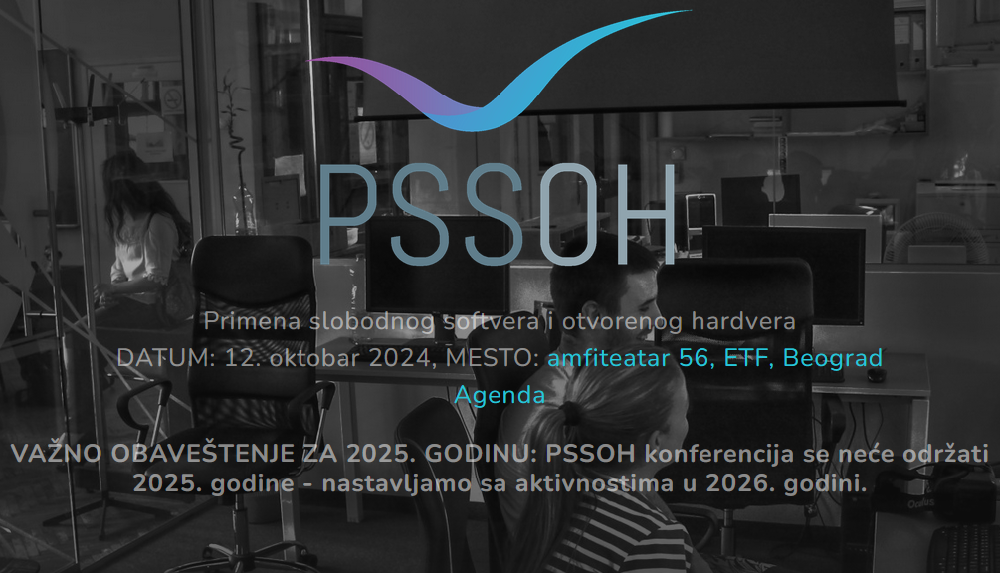

Urednički odbor PSSOH konferencije (Primena slobodnog softvera i otvorenog hardera) je doneo Odluku u kojoj je rešeno da se PSSOH konferencija nažalost neće držati u 2025. godini. Međutim, dobre vesti su da sledeću PSSOH konferenciju možemo da očekujemo već u 2026. godini! Više informacija je dostupno na sajtu konferencije u sekciji Vesti.